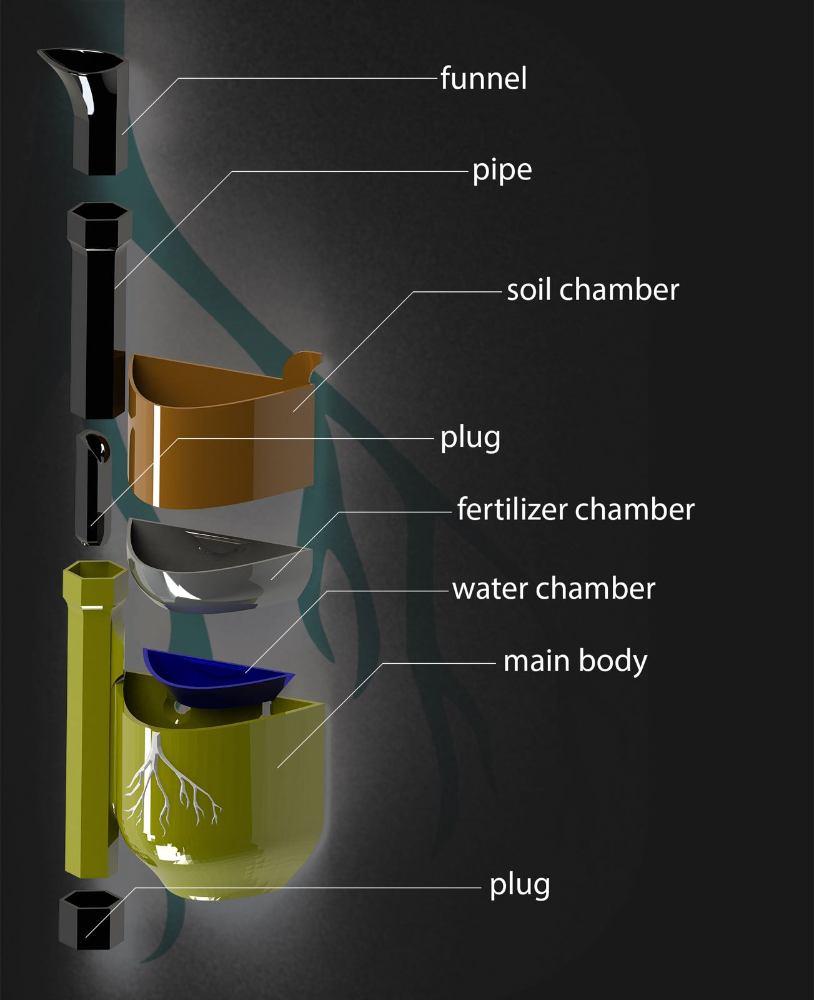

This is a 3D printed vertical pot that produces fertilizers from garden waste. It also has a semi-automatic watering system and an app programmed to make production of balanced fertilizers easier from 41 types of general food and garden wastes.
Notice its smiling back face, was totally intentional:)
The pot was originally designed during a 3D printing competition jam. During the competition, we had some time to come up with an inovative idea related with the topic given: sustainable agriculture and environmental applications.
At first we did not have a solid idea. Then as we did some brainstorm, we had two ideas ,A machine that can even make spaghetti or chop food waste into pieces to help making fertilizers and a vertical garden with an automatic watering system.
We went on with the second choice, and it took around 3 hours to 3D design. At the end, using @Microsoft 's 3D Builder the root texture was applied on the pot.
This anmiation -which was produced in Autodesk 3DsMax- explains how the pieces are assembled.
This phone app was also build using Unity to allow the users choose the appropriate materials for making fertilizer.
Finally we took the first place and won our second 3d printer. So, we decided to donate the second one to a public technical high-school where we gave a seminar about how to use the printer to the students.